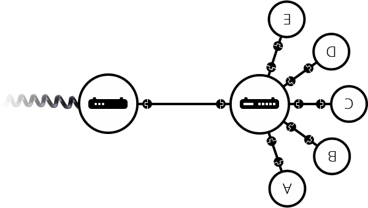

Internet es la columna vertebral de la Web, la infraestructura técnica que la hace posible. En lo más básico, Internet es una gran red de computadoras que se comunican simultáneamente.
La historia de Internet es algo oscura. Comenzó en la década de 1960 como un proyecto de investigación financiado por el ejercito de los EE.UU, y luego se convirtió en una infraestructura pública en la década de 1980 con el apoyo de muchas universidades públicas y empresas privadas. Las distintas tecnologías que soporta Internet han evolucionado con el tiempo, pero la forma en que funciona no ha cambiado mucho: Internet es una forma de conectar las computadoras entre sí y asegurar que, pase lo que pase, encuentren una manera de mantenerse conectadas.
Cuando dos ordenadores necesitan comunicarse, tienes que vincularlos, ya sea físicamente (por lo general con un cable de Ethernet) o de forma inalámbrica (por ejemplo por WiFi o sistema de Bluetooth). Todos los ordenadores modernos pueden soportar cualquiera de este tipo de conexiones.

La red no se limita a dos ordenadores, se pueden conectar tantos como se deseen aunque siendo más complicado cada vez. Por ejemplo, para conectar diez ordenadores, se necesitarían 45 cables y unos nueve conectores por ordenador!

Para resolver este problema, cada ordenador en una red está conectado a una pequeña computadora especial llamada enrutador o router (en inglés). Este enrutador cumple una función: tal como hace un señalizador en una estación de tren, el router se encarga de asegurar que el mensaje enviado desde un ordenador emisor llegue al destino correcto. Para que el ordenador B reciba un mensaje desde el ordenador A, este debe enviarlo primero al router, quien a su vez lo remite al ordenador B asegurándose que dicho mensaje no sea entregado a otro ordenador C.
Una vez que agregamos un enrutador al sistema, nuestra red de 10 ordenadores solo requiere 10 cables: un enchufe para cada ordenador y un enrutador con 10 enchufes .

Hasta aquí todo es más o menos simple, pero ¿qué sucede al conectar cientos, miles, millones de ordenadores entre sí?. Por supuesto un solo enrutador no puede escalar tanto, pero, si lees cuidadosamente, dijimos que un enrutador es como un pequeño ordenador, entonces ¿qué nos impide conectar dos enrutadores a la vez?. Nada: hagámoslo.

Conectando ordenadores a enrutadores y luego enrutadores entre sí, podemos escalar infinitamente.

Una red así se acerca mucho a lo que llamamos Internet, pero hay algo que nos falta. Construimos esa red para nuestros propios propósitos. Hay otras redes ahí fuera: tus amigos, tus vecinos, cualquiera puede tener su propia red de ordenadores. Pero no es posible instalar cables entre tu casa y el resto del mundo, así que ¿cómo puedes manejar esto? Bueno, ya hay cables conectados a tu casa, por ejemplo, la energía eléctrica y el teléfono. La infraestructura telefónica ya conecta tu casa con cualquier persona en el mundo, así que es el cable perfecto que necesitamos. Para conectar nuestra red a la infraestructura telefónica, necesitamos un equipo especial llamado modem. Este modem convierte la información de nuestra red en información manejable por la infraestructura telefónica y viceversa.
Entonces estamos conectados a la infraestructura telefónica. El siguiente paso es enviar el mensaje desde nuestra red a la red que queremos llegar. Para lograr eso, conectaremos nuestra red a un proveedor de servicios de internet (ISP de sus siglas en inglés Internet Service Provider). Un ISP es una empresa que gestiona algunos enrutadores especiales interconectados, que también pueden acceder a enrutadores de otros ISP. Así, el mensaje de nuestra red es llevada a través de la red de redes de ISP, hasta la red de destino. Internet consiste en toda esta infraestructura de redes.

Si deseas enviar un mensaje a una computadora, debes especificar a cuál. Es por ello que todo ordenador conectado a una red cuenta con una dirección única que lo identifica, llamada “dirección IP” o Protocolo de Internet (IP de sus siglas en inglés Internet Protocol). Esta dirección está compuesta por una serie de cuatro números separados por puntos, por ejemplo: 192.168.2.10.
Para los ordenadores es un identificador simple, pero los humanos tienen mayor dificultad a la hora de recordar y memorizar este tipo de dirección. Con el propósito de convertir esta serie numérica en algo que podamos asociar con mayor facilidad a la dirección IP se utiliza lo que conocemos como nombre de dominio. Por ejemplo, google.com es el nombre de dominio utilizado para sustituir la dirección IP 173.194.121.32. Así, usar un nombre de dominio es la manera más fácil para nosotros de identificar un ordenador a través de Internet.

Como puedes notar, cuando navegamos por la web con un navegador, normalmente utilizamos el nombre de dominio para llegar a un sitio web. ¿Significa eso que Internet y la Web son la misma cosa? No es tan simple. Como vimos, Internet es una infraestructura técnica que permite que miles de millones de ordenadores estén conectadas entre sí. Algunos de estos ordenadores, llamados servidores web son capaces de enviar mensajes inteligibles a los navegadores. Por tanto Internet es una infraestructura, mientras que la Web es un servicio construido sobre dicha infraestructura. Cabe señalar que existen otros servicios soportados por Internet, como es el correo electrónico e IRC.